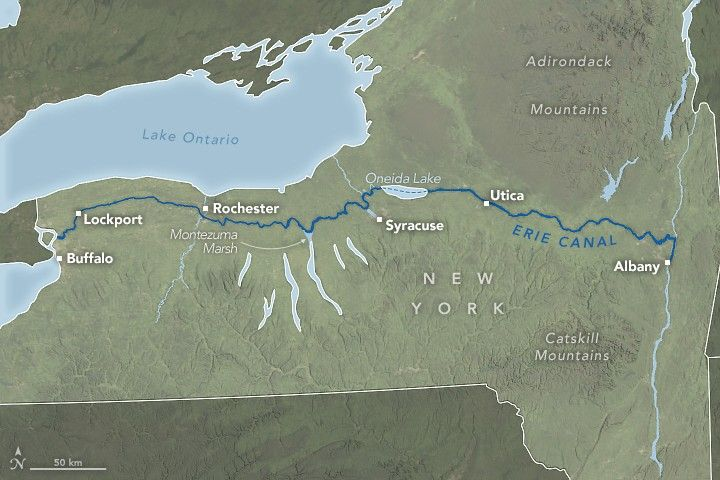

The Erie Canal Turns 200
Cutting 363 miles (584 kilometers) across the state of New York, the Erie Canal was the engineering marvel of its day when it opened in 1825. Built over 8 years with the labor of humans and animals, new tools and techniques, and plenty of ingenuity, the canal established a navigable route from Lake Erie to the Hudson River, creating a vital connection between the U.S. Midwest and the Atlantic Ocean.
This image shows the modern path of the Erie Canal overlaid on a Blue Marble: Next Generation image built from MODIS (Moderate Resolution Imaging Spectroradiometer) scenes. The western half of the canal roughly parallels the shores of Lake Ontario, while the eastern portion follows the Mohawk River valley, the natural divide between the Catskill and Adirondack mountains. The waterway passes through northern hardwood and oak-hickory forests, as well as wetlands such as Montezuma Marsh in the Finger Lakes region.
There were no engineering schools in the U.S. when the canal was conceived, but the amateurs who guided its design became known as graduates of the “Erie School of Engineering.” They devised contraptions for tree felling and stump removal, implements for digging the canal to its standard dimensions—4 feet deep and 40 feet wide—and techniques for blasting through rock.
Other achievements included the construction of 83 locks, including a series of “steps” at Lockport to raise boats over the Niagara Escarpment, as well as several aqueducts to bypass rivers and streams. A black-and-white photograph from around 1880 shows an aqueduct over the Mohawk River about 15 miles (24 kilometers) northwest of Albany. The image captures a lock in the middle of the canal, a feeder canal, and a stone aqueduct spanning the river in the background.
The canal’s opening had immediate effects. Transport times dropped dramatically: packet boats carried passengers from Albany to Buffalo in five days instead of two weeks by stagecoach. Toll revenues repaid the construction costs within 10 years. Cities along the route grew rapidly. In 1820, Rochester and Syracuse were small settlements, and Buffalo and Utica had populations under 3,000. By 1850, all four ranked among the top 40 most populous U.S. cities.
The Erie Canal expanded and evolved over the years, accommodating larger vessels and heavier loads. However, railroads increasingly transported cargo, and commercial traffic declined when ocean-going vessels could navigate the Great Lakes via the St. Lawrence Seaway starting in the late 1950s. Today, the canal still handles limited commercial shipping, but recreational boaters dominate its use. People travel by human-powered craft such as kayaks and canoes, and by bicycle or on foot along the Erie Canalway Trail, which parallels the waterway.
Since 2000, the Erie Canalway National Heritage Corridor, a partnership of municipalities, agencies, and organizations, has worked to preserve the historical and natural features of the canal and ensure public access.